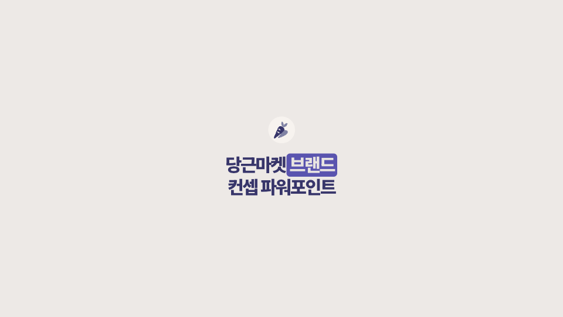
당근 브랜드 컨셉 표지
중앙 당근 배지와 두 줄 타이틀 · 넓은 밝은 여백 중앙에 작은 당근 배지. 두 줄 제목에서 브랜드 단어를 둥근 면으로 강조.
· 화면 출처 ↗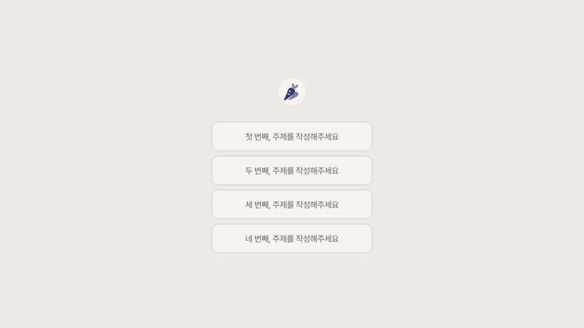
목차
중앙 배지와 세로로 쌓인 네 목차 캡슐 · 중앙의 작은 당근 배지 아래 네 개의 같은 크기 둥근 목차 패널.
· 화면 출처 ↗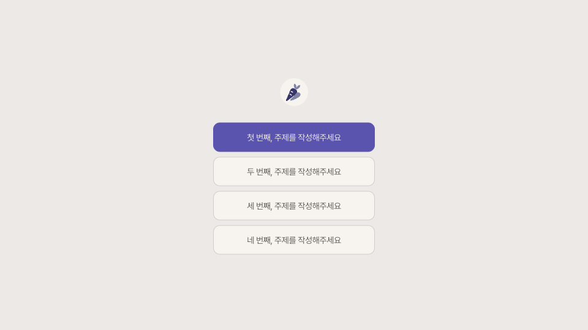
목차 · 첫 주제 강조
중앙 배지와 세로로 쌓인 네 목차 캡슐 · 중앙의 작은 당근 배지 아래 네 개의 같은 크기 둥근 목차 패널. 첫 번째 패널을 강조한 실제 공개 변형.
· 화면 출처 ↗스마트폰 채팅
전면 브랜드 배경과 좌측 하단으로 이어지는 스마트폰 · 하단에서 잘린 큰 휴대폰 안에 다섯 채팅 말풍선. 오른쪽은 당근 배지·두 줄 제목·설명.
· 화면 출처 ↗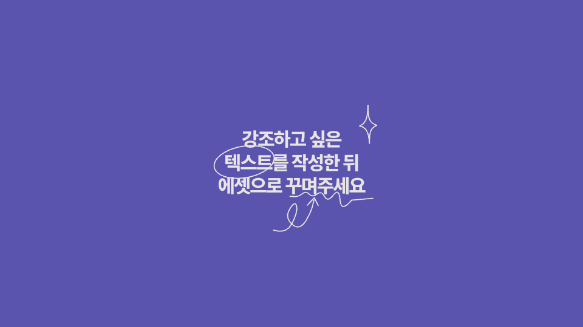
메시지 강조
전면 브랜드 배경 위 중앙 세 줄 문구와 손그림 · 강조 문구 주위에 타원·별·밑줄·곡선 화살표 네 가지 편집 가능한 SVG 장식.
· 화면 출처 ↗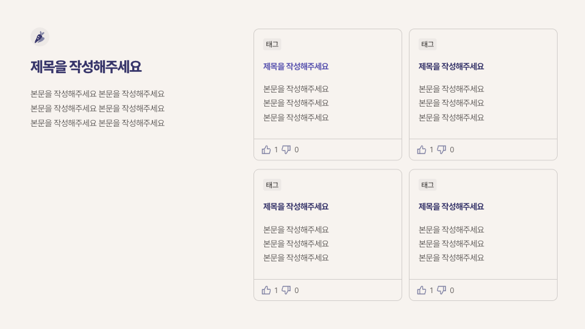
게시글 카드
좌측 소개와 우측 2×2 게시글 카드 · 태그·제목·본문과 하단 좋아요/싫어요 숫자를 가진 네 개의 라운드 카드.
· 화면 출처 ↗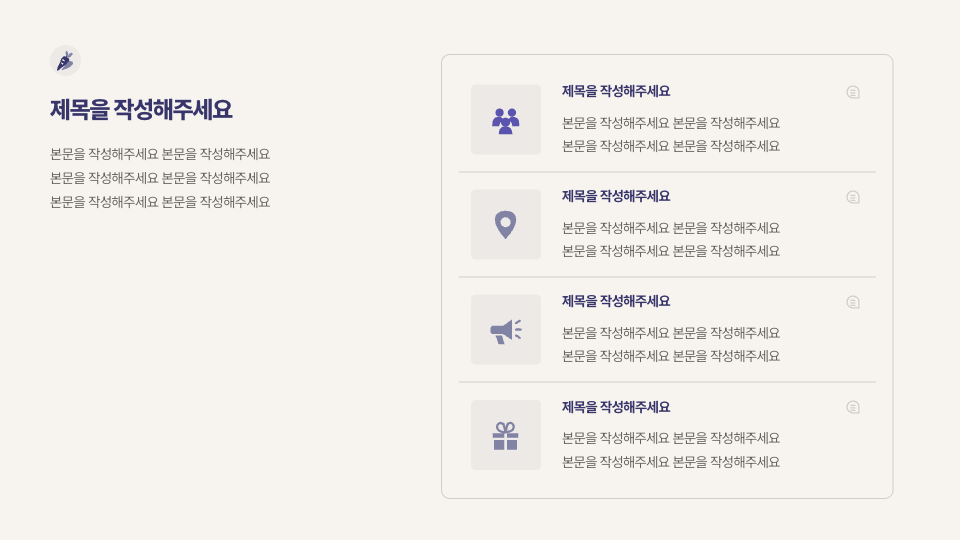
아이콘 목록
좌측 소개와 우측 라운드 패널의 네 행 · 사람·위치·확성기·선물 아이콘을 세로로 배열한 목록. 각 행 오른쪽에 제목·두 줄 설명·메시지 아이콘.
· 화면 출처 ↗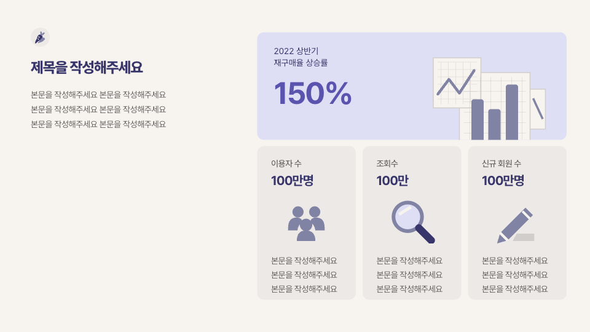
성과 지표
좌측 소개와 우측 1개 대형 KPI·3개 소형 KPI · 상단 150% 재구매율 배너와 겹친 차트 일러스트. 하단 이용자·조회·신규 회원 세 카드.
· 화면 출처 ↗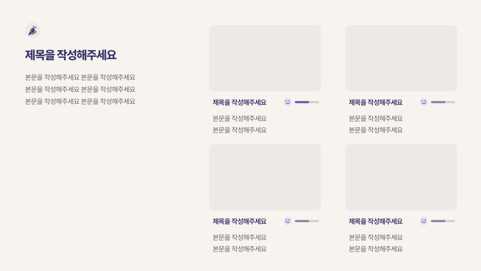
이미지와 만족도 카드
좌측 소개와 우측 2×2 이미지·평가 카드 · 좌측 제목과 세 줄 설명, 우측 네 개 이미지 슬롯과 웃는 얼굴·짧은 만족도 막대.
· 화면 출처 ↗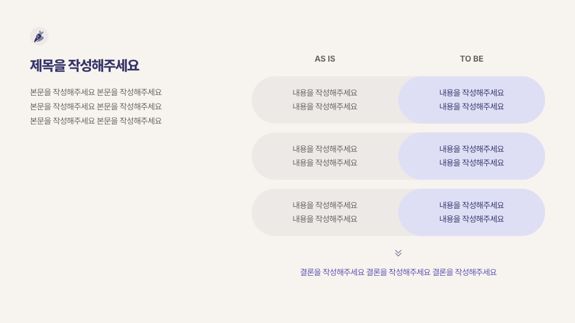
AS IS · TO BE 비교
좌측 소개와 우측 세 줄 캡슐 비교 · 세 개의 긴 둥근 비교 행, 우측 전환 상태를 별도 캡슐로 구분하고 아래 화살표와 결론.
· 화면 출처 ↗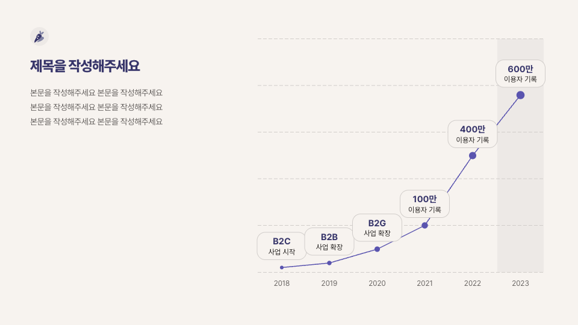
성장 연혁
좌측 소개와 우측 상승 선형 차트 · 2018–2023 여섯 시점, 사업 시작·확장·이용자 기록 말풍선, 마지막 연도 배경 띠.
· 화면 출처 ↗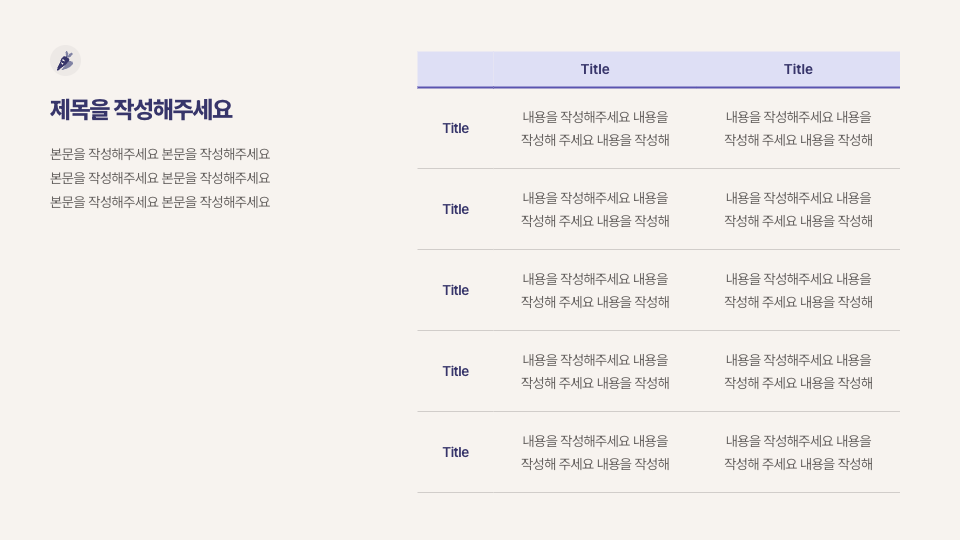
비교 표
좌측 소개와 우측 3열·5행 표 · 두 데이터 열과 다섯 행 제목. 상단 띠와 가는 가로 구분선으로 표 정보를 정리.
· 화면 출처 ↗